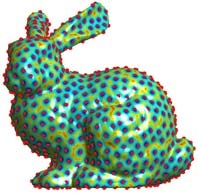

nbr_landmarks = ...; % number of points, eg. 400
W = ones(nverts,1); % the speed function, for now constant speed to perform uniform remeshing
% perform the sampling of the surface
landmark = farthest_point_sampling_mesh( vertex,faces, [], nbr_landmarks, options );
% compute the associated triangulation
[D,Z,Q] = perform_fast_marching_mesh(vertex, faces, landmark);
[vertex_voronoi,faces_voronoi] = compute_voronoi_triangulation_mesh(Q,vertex,faces);
% display the distance function (same as before)
...
% display the remeshed triangulation (same but with vertex_voronoi and faces_voronoi)
...

|
| Farthest point sampling with an increasing number of
points (upper row) and corresponding remeshing (bottom row). |
% first kind of speed: low on the left, high on the right
v = rescale(vertex(1,:));
options.W = rescale(v>0.5, 1, 3); options.W = options.W(:);
% do the remeshing
...
% second kind of speed: continuously increasing
v = rescale(-vertex(1,:),1,8);
options.W = v(:);
% do the remeshing
...



|
| Rows 1&2: uniform sampling and remeshing. Rows 3&4: adapted (split left/right) remeshing. Rows 5&6: adapted (continuously increasing) remeshing. |